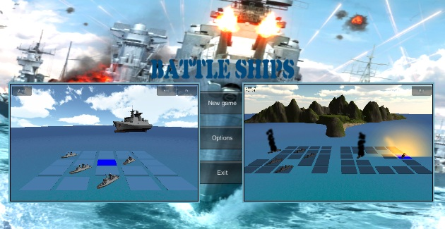
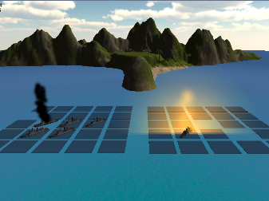

«В поисках кристалла» — Игра в жанре "Три в ряд". Сюжет игры заключается в поисках таинственного кристалла в далёких далёких краях. Чтобы отыскать заветный кристалл вам придется преодолеть множество трудностей и решить сложные загадки, по пути наслаждаясь красотами различных мест сказочного мира.
Играть в Crystal 2
«В поисках кристалла» — Игра в жанре "Три в ряд". Сюжет игры заключается в поисках таинственного кристалла в далёких далёких краях. Чтобы отыскать заветный кристалл вам придется преодолеть множество трудностей и решить сложные загадки, по пути наслаждаясь красотами различных мест сказочного мира.
«В поисках кристалла» — Игра в жанре "Три в ряд". Сюжет игры заключается в поисках таинственного кристалла в далёких далёких краях. Чтобы отыскать заветный кристалл вам придется преодолеть множество трудностей и решить сложные загадки, по пути наслаждаясь красотами различных мест сказочного мира.
Играть в Crystal

«Crystal» — Игра в жанре "Три в ряд". основная задача игрока — собирать или обнаруживать уже существующие линейки, цепочки, либо группы из фишек, имеющие в своём составе не менее трёх игровых элементов. Для победы игрок должен удовлетворить неким условиям, например — набрать нужное количество очков, поместить определённые элементы в нужное положение, собрать тройки над выделенными ячейками поля и т.д.
«Crystal» — Игра в жанре "Три в ряд". основная задача игрока — собирать или обнаруживать уже существующие линейки, цепочки, либо группы из фишек, имеющие в своём составе не менее трёх игровых элементов. Для победы игрок должен удовлетворить неким условиям, например — набрать нужное количество очков, поместить определённые элементы в нужное положение, собрать тройки над выделенными ячейками поля и т.д.
Играть в Battleship

«Морской бой» — игра для двух участников, в которой игроки по очереди называют координаты на неизвестной им карте соперника. Если у соперника по этим координатам имеется корабль (координаты заняты), то корабль или его часть «топится», а попавший получает право сделать ещё один ход. Цель игрока — первым поразить все корабли противника.
«Морской бой» — игра для двух участников, в которой игроки по очереди называют координаты на неизвестной им карте соперника. Если у соперника по этим координатам имеется корабль (координаты заняты), то корабль или его часть «топится», а попавший получает право сделать ещё один ход. Цель игрока — первым поразить все корабли противника.
Играть в Battleship 3D

«Морской бой 3D» — Водные сражения в 3D пространстве против компьютера.
«Морской бой 3D» — Водные сражения в 3D пространстве против компьютера.
Играть в Tick-Tack-Toe
«Крестики-нолики» — логическая игра между двумя противниками на квадратном поле 3 на 3 клетки или бо́льшего размера (вплоть до «бесконечного поля»). Один из игроков играет «крестиками», второй — «ноликами».
«Крестики-нолики» — логическая игра между двумя противниками на квадратном поле 3 на 3 клетки или бо́льшего размера (вплоть до «бесконечного поля»). Один из игроков играет «крестиками», второй — «ноликами».
Starling игры:
- Crystal 2: В поисках кристалла.«В поисках кристалла» — Игра в жанре "Три в ряд". Сюжет игры заключается в поисках таинственного кристалла в далёких далёких краях. Чтобы отыскать заветный кристалл вам придется преодолеть множество трудностей и решить сложные загадки, по пути наслаждаясь красотами различных мест сказочного мира.
Играть онлайн.
Играть ВКонтакте.
Flash игры:
- Crystal.«Crystal» — Игра в жанре "Три в ряд". основная задача игрока — собирать или обнаруживать уже существующие линейки, цепочки, либо группы из фишек, имеющие в своём составе не менее трёх игровых элементов. Для победы игрок должен удовлетворить неким условиям, например — набрать нужное количество очков, поместить определённые элементы в нужное положение, собрать тройки над выделенными ячейками поля и т.д.
Играть онлайн.
Играть ВКонтакте.
 Battleship.«Морской бой» — игра для двух участников, в которой игроки по очереди называют координаты на неизвестной им карте соперника. Если у соперника по этим координатам имеется корабль (координаты заняты), то корабль или его часть «топится», а попавший получает право сделать ещё один ход. Цель игрока — первым поразить все корабли противника.
Battleship.«Морской бой» — игра для двух участников, в которой игроки по очереди называют координаты на неизвестной им карте соперника. Если у соперника по этим координатам имеется корабль (координаты заняты), то корабль или его часть «топится», а попавший получает право сделать ещё один ход. Цель игрока — первым поразить все корабли противника.
Играть онлайн.
Играть ВКонтакте.
 Tick-Tack-Toe.«Кре́стики-но́лики» — логическая игра между двумя противниками на квадратном поле 3 на 3 клетки или бо́льшего размера (вплоть до «бесконечного поля»). Один из игроков играет «крестиками», второй — «ноликами».
Tick-Tack-Toe.«Кре́стики-но́лики» — логическая игра между двумя противниками на квадратном поле 3 на 3 клетки или бо́льшего размера (вплоть до «бесконечного поля»). Один из игроков играет «крестиками», второй — «ноликами».
Играть онлайн.
Играть ВКонтакте.
Unity3D игры:
- Battleship.«Морской бой 3D» — Водные сражения в 3D пространстве против компьютера.
Играть онлайн.
Автор проекта: